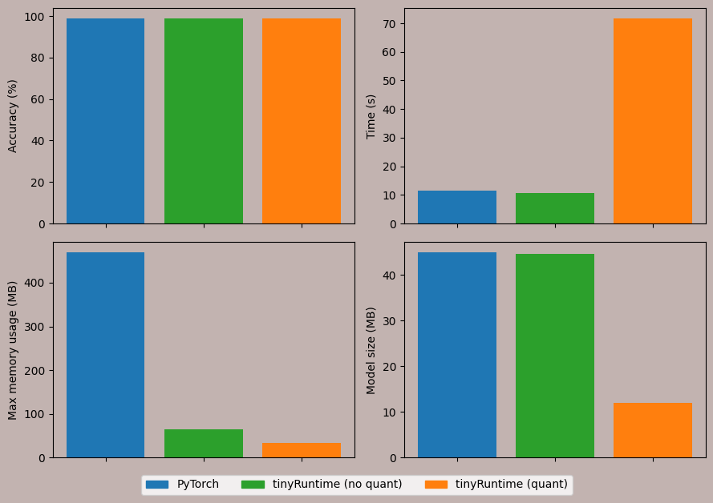

Code
import pandas as pd
import matplotlib.pyplot as plt
from IPython.display import display
def split_dataframe(df):
'''Split dataframe based on Runtime (Pytorch, tinyRuntime (no quant) and tinyRuntime (quant).'''
df_pytorch = df[df["Runtime"] == "PyTorch"]
df_trv = df[(df["Runtime"] == "tinyRuntime") & (df["Quantization"] == False)]
df_trq = df[(df["Runtime"] == "tinyRuntime") & (df["Quantization"] == True)]
return df_pytorch, df_trv, df_trq
def plot_runtime_result(ax, column, df_pytorch, df_trv, df_trq, ylabel):
'''Plot the latest performance comparison based on the selected column.'''
x = ["PyTorch", "tinyRuntime (no quant)", "tinyRuntime (quant)"]
y = [df[column].values[-1] for df in [df_pytorch, df_trv, df_trq]]
bar_colors = ['tab:blue', 'tab:green', 'tab:orange']
bars = ax.bar(x, y, color=bar_colors)
ax.set_ylabel(ylabel)
ax.set_xticklabels([])
ax.set_facecolor(bg_color)
return y # Return the values for the column to construct the DataFrame
def plot_perf_comp(df):
'''Plot latest performance comparisons.'''
df_pytorch, df_trv, df_trq = split_dataframe(df)
# Create subplots
fig, axs = plt.subplots(2, 2, figsize=(9, 6), sharex=True)
# Plot and collect data for each metric
accuracy_values = plot_runtime_result(axs[0, 0], "Accuracy", df_pytorch, df_trv, df_trq, "Accuracy (%)")
time_values = plot_runtime_result(axs[0, 1], "Time", df_pytorch, df_trv, df_trq, "Time (s)")
memory_values = plot_runtime_result(axs[1, 0], "Max memory", df_pytorch, df_trv, df_trq, "Max memory usage (MB)")
model_size_values = plot_runtime_result(axs[1, 1], "Model size", df_pytorch, df_trv, df_trq, "Model size (MB)")
# Create DataFrame
data = {
"Accuracy (%)": accuracy_values,
"Time (s)": time_values,
"Max memory usage (MB)": memory_values,
"Model size (MB)": model_size_values
}
df_results = pd.DataFrame(data, index=["PyTorch", "tinyRuntime (no quant)", "tinyRuntime (quant)"])
display(df_results)
# Show legend for all subplots
labels = ["PyTorch", "tinyRuntime (no quant)", "tinyRuntime (quant)"]
bar_colors = ['tab:blue', 'tab:green', 'tab:orange']
patches = [plt.Rectangle((0, 0), 1, 1, color=bar_colors[i], label=labels[i]) for i in range(len(labels))]
fig.legend(handles=patches, loc='lower center', bbox_to_anchor=(0.5, -0.05), ncol=3)
fig.patch.set_facecolor(bg_color) # set background color
plt.tight_layout()
plt.show()
bg_color = "#C2B3B0"
df = pd.read_csv('benchmark.csv')
df_x86 = df[df["Platform"] == "x86_64"]
plot_perf_comp(df_x86)| Accuracy (%) | Time (s) | Max memory usage (MB) | Model size (MB) | |
|---|---|---|---|---|
| PyTorch | 99.0 | 11.445230 | 468.906250 | 44.938353 |
| tinyRuntime (no quant) | 99.0 | 10.546698 | 65.218750 | 44.660263 |
| tinyRuntime (quant) | 99.0 | 71.750532 | 33.976562 | 11.949406 |
